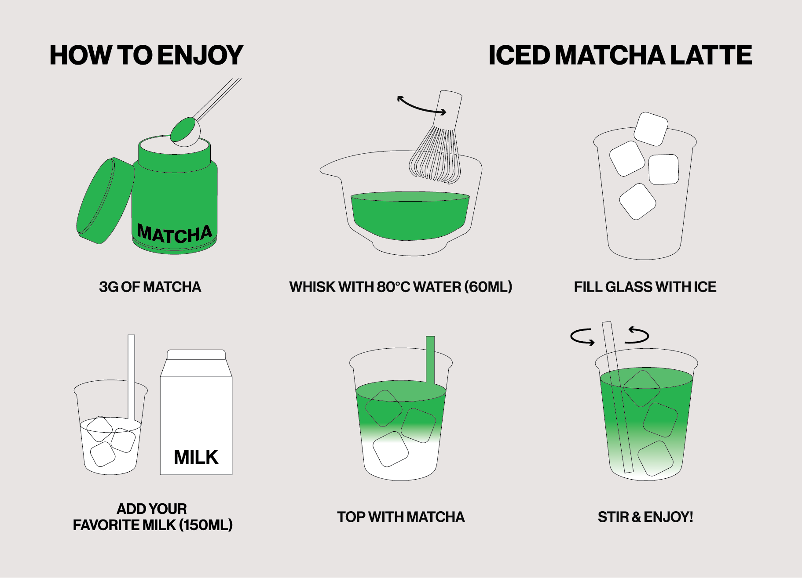

What You'll Need
You can find more details of products and accessories here: A Guide to Matcha Accessories | Products
- Your choice of Matcha Powder
- Your choice of Matcha Whisk
- Bowl or cup
- Sifter
- Scale (optional)
Recipe: Iced Matcha Latte
One of the easiest ways to enjoy matcha at home is with an iced latte. It’s refreshing, creamy, and only takes a few minutes. This recipe is an ideal ratio for beginners.
Step 1.
Scoop 3g (1 ½ tsp) of matcha into a bowl.
Step 2.
Add 60ml (1/4 cup) hot water (80°C) and whisk until frothy. (Aim to avoid whisking with boiling water, as that will "burn" your matcha and cause a bitter flavor)
Step 3.
Fill a glass with ice.
Step 4.
Pour in 150ml of your favorite milk. (Optional: Add 1-2 tbs of your favorite sweetener)
Step 5.
Top with whisked matcha. Stir, sip, and enjoy!

Other Tips:
Choosing between dairy and plant-based milk for your matcha latte affects both taste and texture. Dairy milks offer rich creaminess and a subtle sweetness that pairs well with ceremonial-grade matcha. Plant milks bring their own distinct flavors and mouthfeels, and are often preferred for dietary and sustainability reasons.
Popular Alternative Milk Options: Oat milk, Almond milk, Coconut milk, Soy milk
Finding the right sweetener is all about balancing the matcha’s natural depth without masking its unique flavor.
Popular Sweetener Options: Maple syrup, Agave, Honey